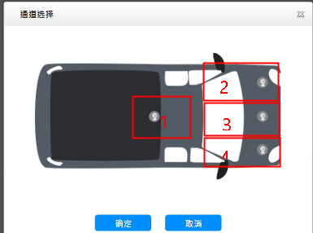
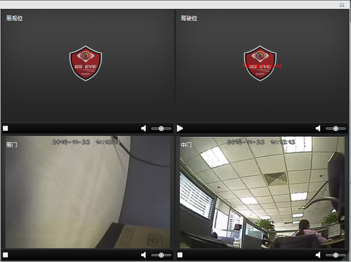

点播实时视频
对于在线状态的监控车辆，进行实时视频点播。
点播多路实时视频：同时打开并查看所选车辆的多路实时视频。
| 1. | 在日常监控主界面的组织机构树中选择监控车辆。 |
| 2. | 单击被选择车辆后的〖 
Fig 27 通道选择窗口 摄像头1为中门摄像头，摄像头2为驾驶位摄像头，摄像头3为前视位摄像头，摄像头4为前门摄像头。
|
| 3. | 选择需要查看视频的摄像头，单击〖确定〗，弹出实时视频播放窗口。 |
| 4. | 在实时视频播放窗口中的单个视频窗口，单击〖 
Fig 28 实时视频播放窗口
|
GIS屏查看单个视频及位置：查看所选车辆的单个实时视频及实时位置。
| 1. | 在日常监控主界面的组织机构树中选择监控车辆，系统会在GIS地图上居中显示被选择车辆位置。 |
| 2. | 鼠标滑过车辆在GIS地图上的图标，图标上方自动显示该车辆的操作按钮。 |
| 3. | 单击最右侧的〖 |
| 4. | GIS区车辆图标上方，打开一路视频窗口，单击〖 |
| 5. | 视频播放窗口会随车辆行驶位置进行移动，如下图所示。
 Fig 29 显示车辆视频和位置
|